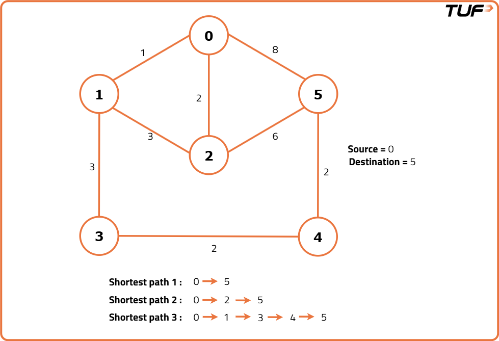
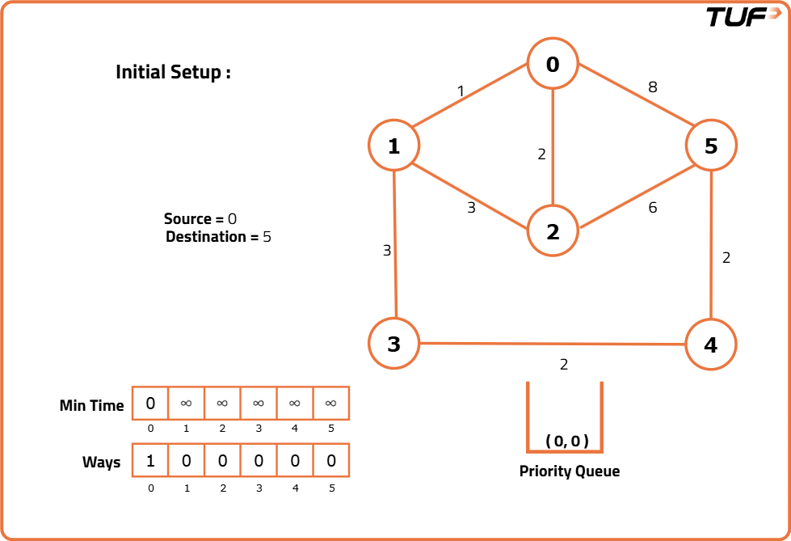
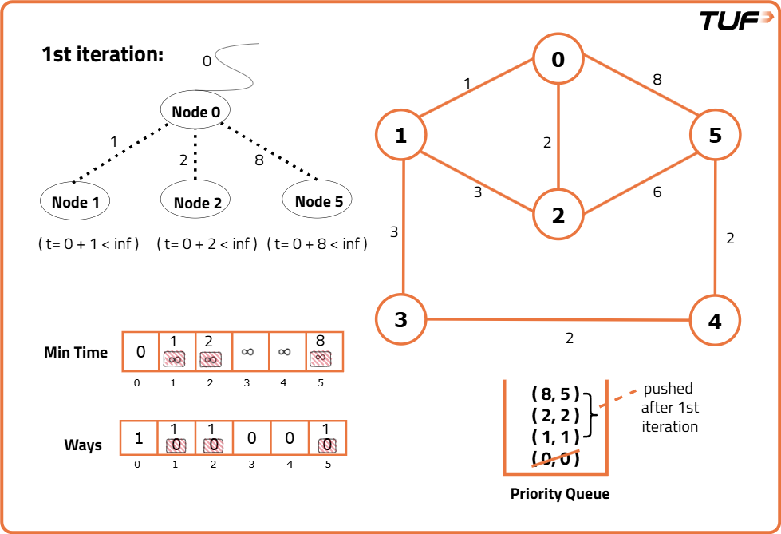
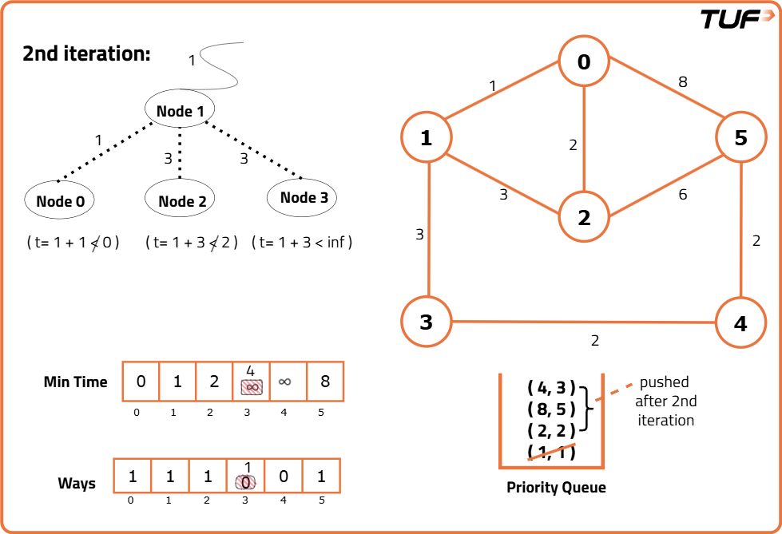
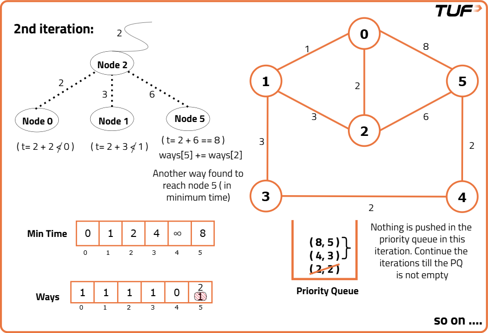

G-40: Number of Ways to Arrive at Destination
Problem Statement:
You are in a city that consists of n intersections numbered from 0 to n - 1 with bi-directional roads between some intersections. The inputs are generated such that you can reach any intersection from any other intersection and that there is at most one road between any two intersections.
You are given an integer n and a 2D integer array ‘roads’ where roads[i] = [ui, vi, timei] means that there is a road between intersections ui and vi that takes timei minutes to travel. You want to know in how many ways you can travel from intersection 0 to intersection n - 1 in the shortest amount of time.
Return the number of ways you can arrive at your destination in the shortest amount of time. Since the answer may be large, return it modulo 109 + 7.
Examples
Example 1: Input: n = 7, m = 10 edges = [[0, 6, 7], [0, 1, 2], [1, 2, 3], [1, 3, 3], [6, 3, 3], [3, 5, 1], [6, 5, 1], [2, 5, 1], [0, 4, 5], [4, 6, 2]] Output: 4 Explanation: The four ways to get from city 0 to city 6 in 7 minutes (the shortest time) are: - 0 → 6 - 0 → 4 → 6 - 0 → 1 → 2 → 5 → 6 - 0 → 1 → 3 → 5 → 6 Example 2: Input: n = 6, m = 8 edges = [[0, 5, 8], [0, 2, 2], [0, 1, 1], [1, 3, 3], [1, 2, 3], [2, 5, 6], [3, 4, 2], [4, 5, 2]] Output: 3 Explanation: The three ways to get from city 0 to city 5 in 8 minutes (the shortest time) are: - 0 → 5 - 0 → 2 → 5 - 0 → 1 → 3 → 4 → 5
Disclaimer: Here is the practice link to help you assess your knowledge better. It's highly recommend trying to solve it before looking at the solution.
Approach
Algorithm
- Use Dijkstra’s Algorithm to find the shortest paths from the source node to all other nodes.
- Define a priority queue to store pairs of {dist, node}, where 'dist' represents the shortest distance from the source node to the current node.
- Initialize a distance array with a very large number (∞) for all nodes, indicating they are unvisited, and set the source node’s distance to 0.
- Define a ways array to store the number of shortest paths to each node, initialized to 0.
- Push the source node into the queue with a distance of 0 and ways set to 1, as there is exactly one way to reach the source.
- Pop the front element from the queue, examine its adjacent nodes, and check the current distance to each adjacent node.
- If the current distance to a node is smaller than the previously stored distance, update the distance and push the node into the queue with the new distance. Also, set the ways for that node to the same value as the source node’s ways.
- If the current distance equals the previously stored distance, increment the ways array at that node by 1 to account for an additional shortest path.
- Repeat these steps until the queue is empty or the destination node is reached.
- Finally, return the number of ways to reach the destination node (ways[n-1]) modulo 10^9+7 when the queue is empty.





Code
#include <bits/stdc++.h>
using namespace std;
class Solution {
public:
int CheapestFLight(int n, vector<vector<int>> &flights, int src, int dst, int K) {
// Create the adjacency list to represent airports and flights as a graph
vector<pair<int, int>> adj[n];
for (auto it : flights) {
adj[it[0]].push_back({it[1], it[2]});
adj[it[1]].push_back({it[0], it[2]});
}
// Create a priority queue (min heap) for Dijkstra's algorithm
priority_queue<pair<int, int>,
vector<pair<int, int>>, greater<pair<int, int>>> pq;
// Initialize the distance array and ways array
vector<int> dist(n, INT_MAX), ways(n, 0);
// Distance for the source node is 0
dist[src] = 0;
// There's 1 way to reach the source (itself)
ways[src] = 1;
// Push the source node with distance 0
pq.push({0, src});
// Define the modulo value for large numbers
int mod = (int)(1e9 + 7);
// Perform Dijkstra's algorithm
while (!pq.empty()) {
int dis = pq.top().first;
int node = pq.top().second;
pq.pop();
// Iterate through adjacent nodes
for (auto it : adj[node]) {
// Next destination node
int adjNode = it.first;
// Cost of the flight to the next destination
int edW = it.second;
// If a shorter path is found, update the distance and number of ways
if (dis + edW < dist[adjNode]) {
// Update the distance
dist[adjNode] = dis + edW;
// Push the new node with updated distance
pq.push({dis + edW, adjNode});
// Copy the number of ways to the new node
ways[adjNode] = ways[node];
}
// If the same shortest path is found, update the number of ways
else if (dis + edW == dist[adjNode]) {
// Increment the number of ways
ways[adjNode] = (ways[adjNode] + ways[node]) % mod;
}
}
}
// Return the number of ways to reach the last node modulo 10^9 + 7
return ways[dst] % mod;
}
};
int main() {
// Driver Code
int n = 7;
// Define the edges (source, destination, weight)
vector<vector<int>> edges = {{0, 6, 7}, {0, 1, 2}, {1, 2, 3}, {1, 3, 3}, {6, 3, 3},
{3, 5, 1}, {6, 5, 1}, {2, 5, 1}, {0, 4, 5}, {4, 6, 2}};
Solution obj;
// Call the method to count the number of shortest paths
int ans = obj.CheapestFLight(n, edges, 0, 3, 1);
// Output the result
cout << ans << endl;
return 0;
}Complexity Analysis
Time Complexity: O(E * log(V)), as we are using simple Dijkstra's algorithm here, the time complexity will be of the order E * log(V). Where E = Number of edges and V = Number of vertices.
Space Complexity: O(N), for the dist array, ways array, and approximate complexity for the priority queue. Where N = Number of nodes.